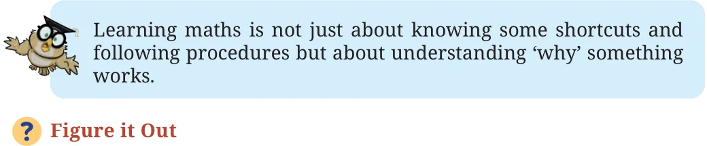

- (ii)If the sum of the digits of a number is divisible by 9, then the
number is divisible by 9.
- (iii)If a number is not divisible by 9, then the sum of its digits is
not divisible by 9.
- (iv)If the sum of the digits of a number is not divisible by 9, then
the number is not divisible by 9.

- 1.Find, without dividing, whether the following numbers are divisible
by 9.
- (i)123 (ii) 405 (iii) 8888 (iv) 93547 (v) 358095
- 2.Find the smallest multiple of 9 with no odd digits.
- 3.Find the multiple of 9 that is closest to the number 6000.
- 4.How many multiples of 9 are there between the numbers 4300 and
4400?